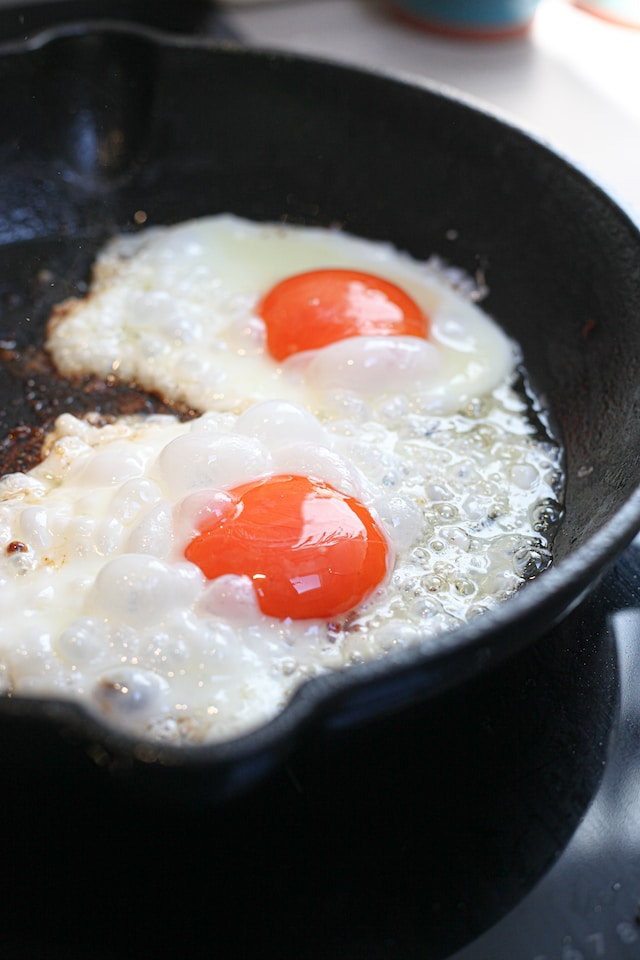

Fried Egg

Description
A fried egg is a simple yet satisfying dish made by
cracking an egg into a hot pan with a small amount of
oil or butter and cooking it until the egg white is set
while the yolk remains runny. As the heat transforms the
egg, the white turns opaque and forms a delicate, slightly
crispy edge, encasing the rich, golden yolk. The yolk itself
offers a creamy, velvety texture and a luscious, savory
flavor that contrasts beautifully with the subtle saltiness
of the egg white. Whether enjoyed on its own, atop toast,
or as a versatile addition to countless recipes, a perfectly
fried egg is a timeless culinary delight.
Ingredients
- raw egg
- olive oil or butter
- optional: salt
- optional: pepper
Steps
-
Heat a non-stick pan over medium heat.
- Add a small amount of oil or butter to the pan and let it melt or heat up.
- Crack an egg into a small bowl or directly into the pan.
- Gently slide the egg from the bowl into the pan, being careful not to break the yolk.
- Let the egg cook undisturbed until the white is set and the edges turn crispy, usually for about 2-3 minutes.
- If you prefer the yolk to be runny, cook the egg for a shorter time. For a firmer yolk, cook it for a bit longer.
- Season the egg with salt and pepper or any desired seasonings.
- Carefully transfer the fried egg to a plate and serve it as desired.